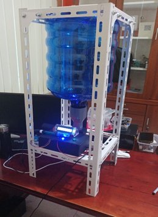

Ekosistem budidaya ikan berbasis IoT yang menggabungkan teknologi mutakhir, efisiensi produksi, dan edukasi berkelanjutan untuk hasil panen optimal.
Smart Fish Farm hadir sebagai pionir ekosistem budidaya ikan modern di Indonesia. Kami memadukan kecerdasan IoT, efisiensi operasional, dan semangat edukasi untuk menciptakan sistem akuakultur yang berkelanjutan dan menguntungkan.

Tiga pilar utama yang menjadi fondasi ekosistem Smart Fish Farm
Lele & nila premium hasil budidaya teknologi. Kualitas terjamin, pasokan konsisten, harga kompetitif langsung dari tambak.
Lihat ProdukMesin pemberi pakan otomatis berbasis IoT dengan sensor suhu & pH real-time. Efisiensi pakan meningkat hingga 40%.
Lihat TeknologiProgram eduwisata budidaya ikan berbasis teknologi untuk pelajar & komunitas. Pengalaman langsung yang menginspirasi.
Lihat ProgramIkan lele segar hasil budidaya sistem IoT. Bebas kontaminan, ukuran seragam, pertumbuhan optimal dengan manajemen pakan cerdas.
Nila berkualitas tinggi dengan daging tebal dan rasa lezat. Dibudidayakan dengan teknologi monitoring air otomatis 24/7.
Mesin pemberi pakan otomatis canggih dengan sistem sensor terintegrasi. Kelola kolam ikan Anda dari mana saja, kapan saja.
Kelola seluruh operasi tambak dari satu platform terintegrasi. Monitor kondisi air real-time, atur jadwal pakan, dan pasarkan produk Anda langsung kepada konsumen.
Eduwisata Berbasis Teknologi
Program wisata edukasi yang menggabungkan pengalaman langsung di tambak dengan pengenalan teknologi IoT budidaya modern.
"Menjadi pelopor budidaya ikan berbasis teknologi di Indonesia yang berkelanjutan dan berdaya saing global."
Mengoptimalkan proses budidaya dengan otomasi dan data-driven management untuk hasil panen maksimal.
Membagikan ilmu dan teknologi budidaya modern kepada petani ikan dan generasi penerus bangsa.
Menerapkan praktik budidaya ramah lingkungan yang menjaga ekosistem dan ketahanan pangan nasional.
Infrastruktur IoT terpadu yang memastikan kondisi optimal kolam Anda setiap saat
Monitoring suhu, pH, oksigen terlarut, dan kejernihan air secara real-time dengan akurasi tinggi.
Pemberian pakan terjadwal berdasarkan data sensor dan kebutuhan nutrisi ikan secara adaptif.
Dashboard analitik lengkap dengan grafik pertumbuhan, konsumsi pakan, dan proyeksi panen.
Sistem peringatan dini berbasis AI ketika parameter air di luar batas normal yang ditetapkan.
Wisata edukasi unik yang membawa Anda masuk ke dunia akuakultur berbasis teknologi modern
Rasakan pengalaman langsung memberi makan ikan menggunakan sistem Smart Feeder IoT yang canggih.
Pelajari teknik budidaya ikan modern dari ahli kami. Dapatkan ilmu praktis yang langsung bisa diterapkan.
Interaksi langsung dengan sistem sensor dan dashboard monitoring. Kenali teknologi masa depan akuakultur.
Sesi interaktif dengan tim ahli Smart Fish Farm untuk menjawab semua pertanyaan Anda.
Tersedia untuk rombongan sekolah, komunitas, instansi, dan umum. Hubungi kami untuk paket khusus grup!
Daftar Sekarang"Smart Fish Farm benar-benar mengubah cara saya beternak ikan. Dengan Smart Feeder IoT, pakan lebih efisien dan hasil panen meningkat 30%!"
"Program aquawisata untuk siswa kami luar biasa! Anak-anak antusias belajar teknologi IoT sambil mengenal dunia perikanan. Sangat edukatif!"
"Ikan nila dari Smart Fish Farm kualitasnya konsisten dan segar. Saya sudah jadi pelanggan tetap selama 1 tahun. Harga juga sangat terjangkau!"
Ada pertanyaan, kerja sama, atau ingin berkunjung? Kami siap melayani Anda!
Jl. Budidaya Ikan No. 12, Kec. Medan Tuntungan,
Kota Medan, Sumatera Utara 20141
Senin – Sabtu: 08.00 – 17.00 WIB